ZeroTetris：一种基于空间特征相似性的稀疏 MLP 引擎，面向神经体渲染（Neural Volume Rendering）
该论文针对 Neural Volume Rendering（NVR，如 NeRF、Instant-NGP）中 MLP evaluation 计算量巨大（原始 NeRF 渲染一张 800×800 图像需 54T MAC）、现有 GPU 与 CNN/SpGEMM 加速器难以高效承载的问题，提出稀疏 MLP 硬件加速器 ZeroTetris。方法上，作者 profiling 发现 ReLU 激活使激活矩阵平均稀疏率达 73.4%–81.8%，且相邻采样点特征相似导致零值成行分布；据此采用 outer product 计算顺序，用 nz_row 位图编码整行全零并跳过对应权重读取与计算（形似 Tetris 消行），构建含 Sparsity Encoder、PE 阵列、Partial result Merger 的单核架构，并为多核系统设计带预取与请求调度的多级 cache。关键结论：28nm CMOS 下单核 200 MHz、3.18 mm²、123.7 mW，较稠密加速器加速 3.1×/2.3×，面积与能效优于 NeuRex、OuterSPACE、SIGMA；多级 cache 在 4/8 核场景领先其他配置 17.6%–59.2%，并经 FPGA 原型验证。
NVR 的 MLP evaluation 是性能瓶颈：原始 NeRF 在 V100 GPU 上仅 0.03 FPS，且其 MAC 操作量比 ResNet-50 高四个数量级；现有 CNN 加速器只能利用权重静态稀疏，SpGEMM 加速器面向超大尺寸、极低密度的稀疏矩阵而面积功耗开销大，而已有 NVR 专用加速器均未利用 NVR 作为 3D 场景隐式表示所带来的相邻采样点/相邻光线之间的特征相似性及其形成的按行零值稀疏模式。
算法-硬件协同设计：(1) 通过 profiling 刻画 NVR 激活的相似性稀疏——ReLU 导致大量零值，且同一光线或邻近光线上相邻采样点特征相似，使 batch 查询 MLP 时零值聚集在同一激活行；(2) 采用 outer product 形式的矩阵乘，将每行激活编码为 nz_row 位（1 表示该行含非零值，0 表示整行全零），整行全零时跳过权重读取与计算（Tetris 式消行）；(3) 单核架构包含 Sparsity Encoder、4 个 PE Tile（每 Tile 16×b 个 PE）、Partial result Merger（两级加法树）与 IMEM/L1 WMEM/AMEM，通过 PM 与 AMEM 双缓冲适配 16–256 等多种输出维度；(4) 多核系统采用私有 L1 + 共享 L2 WMEM 的多级 cache，基于 nz_row 做预取过滤与内存请求重调度以减少访问冲突；(5) 通过 28nm CMOS 实现、SystemC 周期精确仿真器与 FPGA 原型进行评估。
NeRF 与 Instant-NGP 的激活平均稀疏率分别高达 81.8% 与 73.4%（NeRF Synthetic 数据集 profiling）
相比执行同等网络计算的稠密加速器，ZeroTetris 在 NeRF 与 Instant-NGP 上分别取得 3.1× 与 2.3× 加速（对应 83.0% 稀疏率与 76.5% 零利用率）
28nm CMOS 下单核 ZeroTetris 工作于 200 MHz，占用 3.18 mm² 硅面积，功耗 123.7 mW
与 NeuRex、OuterSPACE、SIGMA 等专用稀疏矩阵乘/MLP 加速器相比，在面积效率与功耗效率上表现更优（Table 1 对比）
多级 cache 系统在 4 核与 8 核配置下优于共享单端口 L1 与每核独立大 L1 两种方案 17.6%–59.2%（基于 SystemC 周期精确仿真）
搭建了 FPGA 概念验证原型系统，其渲染图像与 GPU 结果一致
区别于 CNN 加速器（仅能利用权重静态稀疏）、EIE（利用激活稀疏但 PE 负载不均衡）以及通用 SpGEMM 加速器（面向高达十亿维、0.0003% 密度的超大稀疏矩阵，需复杂的编码/检测/排序/合并电路导致面积功耗开销大），ZeroTetris 首次利用 NVR 模型编码 3D 场景这一特性带来的相邻采样点特征相似性，使零值按行聚集，从而用简单的行级零跳过电路（outer product + nz_row 编码）以更低硬件开销利用 60%–90% 中等稀疏度、小尺寸矩阵的 NVR 负载；并配套提出基于稀疏信息的预取与请求调度的多级 cache 系统。
相关度级别：low
命中能力域：无明显对应
理由：论文核心贡献是面向 NVR 负载的稀疏 MLP AI 加速器的算法-硬件协同设计与微架构（稀疏计算跳零、outer product 数据流、片上权重 cache 层次），属于 AI/ML 加速器领域；全文不涉及 LPDDR/HBM/UCIe 等存储与互连协议、PHY/控制器设计、UVM/formal 验证、时序/物理 sign-off 或验证自动化方法学，与团队 7 个能力域均无实质交集。其多级 cache 与请求调度针对的是片上 SRAM 权重存储而非内存 IP；SystemC 周期精确建模与 FPGA 原型验证属于团队已具备的通用工程能力，不构成新的方法学增量，故判定为基本无关联。
建议动作：仅了解结论
Haochuan Wan 上海科技大学 中国上海 wanhch@shanghaitech.edu.cn Linjie Ma 上海科技大学 中国上海 malj@shanghaitech.edu.cn Antong Li 上海科技大学 中国上海 liat2023@shanghaitech.edu.cn
Pingqiang Zhou 上海科技大学 中国上海 zhoupq@shanghaitech.edu.cn Jingyi Yu ∗† 上海科技大学 中国上海 yujingyi@shanghaitech.edu.cn
神经体渲染（NVR）是针对虚拟世界照片级真实感渲染这一长期存在问题的一种全新范式，在过去三年中得到了爆发式发展。NVR 独特且庞大的计算需求为其部署到现有的神经网络专用加速器上带来了挑战。在本工作中，我们提出 ZeroTetris，一种面向 NVR 的基于空间特征相似性的稀疏多层感知机（MLP）硬件加速器。通过利用 NVR 模型中相邻采样点之间独特的基于相似性的稀疏性，ZeroTetris 能够高效地旁路零激活值的计算，从而提升能效。评估结果证实了所提出设计的有效性，展现出 ZeroTetris 相比其他专用稀疏矩阵乘法或 MLP 加速器设计在面积和功耗效率方面的卓越性能。
神经体渲染，稀疏矩阵乘法，硬件加速器
Haochuan Wan、Linjie Ma、Antong Li、Pingqiang Zhou、Jingyi Yu 和 Xin Lou。2024。ZeroTetris：一种基于空间特征相似性的面向神经体渲染的稀疏MLP引擎。收录于第61届 ACM/IEEE 设计自动化会议（DAC '24），2024年6月23日至27日，美国加利福尼亚州旧金山。ACM，美国纽约州纽约市，共6页。https://doi.org/10.1145/3649329.3655684
受2020年神经辐射场（NeRF）[13]这一现象级工作的启发，随后三年见证了神经体渲染（NVR）的爆发式发展，这是一种数据驱动的
∗ 同时隶属于智能感知与人机协同教育部重点实验室（上海科技大学）。
† 通讯作者。
允许在不收取费用的情况下，为个人或课堂使用制作本作品部分或全部内容的数字或硬拷贝，前提是这些拷贝不用于营利或商业目的，且拷贝在首页带有本声明及完整的引用信息。本作品中第三方组件的版权必须得到尊重。对于所有其他用途，请联系所有者/作者。
© 2024 版权归所有者/作者所有。
ACM ISBN 979-8-4007-0601-1/24/06
ShanghaiTech University Shanghai, China louxin@shanghaitech.edu.cn
solution to a persistent challenge in computer graphics-the authentic rendering of virtual worlds. As a revolutionary paradigm, the application of NVR extends across diverse domains, spanning from virtual and augmented reality to 3D reconstruction [5, 6] and autonomous driving [12], delivering exceptional reconstruction and rendering performance.
However, apart from the superior performance, NVR methods also entail substantial computational requirements that do not fit the existing graphics hardware or dedicated neural network accelerators. The original NeRF achieves only 0.03 frames per second (FPS)[13] on the high-end NVIDIA V100 GPU[1], far away from the requirement of practical deployment. While many algorithm-level optimizations have been explored to accelerate NVR, achieving real-time performance, they still hinge on large, power-demanding GPU cards, limiting their applications. Moreover, mapping NVR algorithms to existing hardware accelerators for convolutional neural networks (CNNs) poses a nontrivial challenge due to the use of multilayer perceptrons (MLPs) in NVR instead of convolutional networks [18].
Therefore, efforts have been devoted to designing dedicated hardware for NVR applications. As a pioneering work, [18] introduced a specialized architecture for NeRF, achieving much better energy efficiency than GPU and TPU implementations. Subsequently, several dedicated accelerators tailored for NVR have emerged, incorporating diverse optimizations including efficient sampling strategy as demonstrated in [11], consideration of frame familiarity [7], and implementation of hardware-friendly hash encoding [10]. All these works have reported enhanced rendering speed and superior energy efficiency compared to the original GPU implementation of NeRF.
While existing NVR accelerators have explored various possibilities for acceleration, they missed the unique scene-representation property of NVR methods, i.e., NVR models encode 3D scenes. Specifically, existing designs have yet to harness the similarities between cast rays and spatially adjacent sample points along the rays. In this work, we propose ZeroTetris, a spacial feature similaritybased sparse MLP engine for NVR. In particular, we make the following contributions:
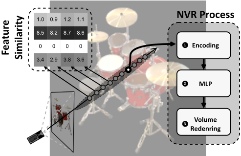
the computation of NVR. We also design a multilevel cache architecture for multicore ZeroTetris system to reduce the on-chip memory size and minimize potential data access conflicts.
近年来，涌现出许多专门为卷积神经网络（CNN）或稀疏通用矩阵乘法（SpGEMM）运算而设计的硬件加速器。早期的CNN加速器 [3, 4, 16] 专注于优化CNN计算中的数据搬运，尤其是卷积运算。它们还通过对权重参数进行离线压缩与编码来利用CNN权重核中存在的稀疏性，减少无效运算以提升计算效率。然而，这些加速器只能利用权重中的静态稀疏性，因为激活中的动态稀疏性需要对零值进行在线检测与跳过。EIE[8] 能够利用激活中的稀疏性，但可能导致各处理单元（PE）之间的负载不均衡。随着PE数量的增加，这一问题日益突出，使其不适用于计算需求显著更高的任务。
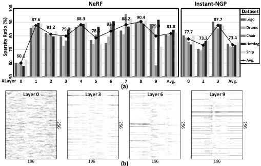
另一方面，针对SpGEMM张量代数提出的加速器 [15, 17, 19] 擅长加速高度稀疏且规模庞大的矩阵乘法，其矩阵维度可高达10.8亿，而密度仅为0.0003% [15]。为了处理这些庞大的稀疏矩阵并提高对零值的利用率，它们开发了不同的格式来编码稀疏信息，并设计了专用模块来检测、排序和合并数据，这会引入较大的面积与功耗开销。这些设计在承担加速NVR算法的任务时可能表现出低效。此类算法的稀疏度通常介于60%至90%之间，且矩阵维度相对较小。
本节介绍 ZeroTetris 所提出的相似度感知稀疏多层感知机（MLP）计算算法。我们首先对 NVR 算法中矩阵的稀疏性进行了分析，揭示了激活值内部的空间相似性特性。利用这一特性，我们提出了一种基于外积的算法来提升计算效率。
由于神经体渲染（NVR）模型以隐式方式表示三维场景，利用权重稀疏性并非易事，因为权重可能会显著影响最终的渲染结果。然而，NVR 算法在其多层感知机（MLP）中使用了 ReLU，导致激活矩阵中出现大量零值。图 2(a) 展示了 NeRF 和 Instant-NGP 在渲染 NeRF Synthetic 数据集 [13] 时各层激活矩阵的稀疏比例。根据我们的剖析结果，NeRF 和 Instant-NGP 的平均激活稀疏度
ZeroTetris：面向神经体渲染的基于空间特征相似性的稀疏 MLP 引擎
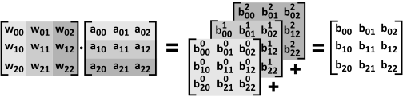
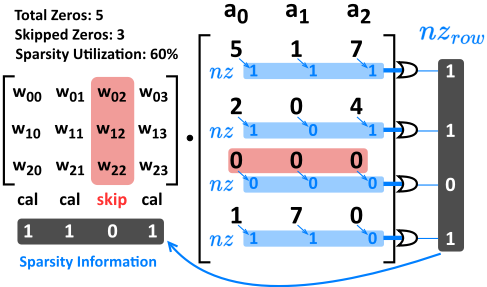
分别可高达 81.8% 和 73.4%。此外，在渲染过程中，如图 1 所示，沿每条光线需要采集多个采样点。由于同一光线或邻近光线上的相邻采样点之间光学信息相似，其特征向量中的对应元素往往具有相近的取值。这种相似性在经过 ReLU 激活后尤为显著，使得特征向量中的零值呈现出相似的分布。图 2(b) 展示了基于来自 NeRF 的 196 个样本所得的第 1、3、6 和 9 层输出激活矩阵的稀疏度分布。当空间上相邻的采样点以批处理方式查询 MLP 时，这种基于相似性的稀疏性往往会使零值出现在激活的同一行中。
外积方法 [2] 将矩阵乘法转换为两个矩阵的列与行之间的外积，如图 3 所示。该过程可以描述为：
其中 w 𝑖 是 W 的第 𝑖 列，a 𝑖 是 A 的第 𝑖 行，B 𝑖 是 B 的部分结果矩阵。由于神经体渲染（NVR）激活中存在空间上的稀疏相似性（正如我们所表征的那样），同一批次内的样本可能在相同的特征位置上共享零值，从而导致零值占据整行。在这种情况下，当利用外积方法进行计算时，激活中的零值可以按行为单位被高效地编码并跳过。
如图 4 所示，每一行激活根据其中是否存在非零（nz）值被编码为 𝑛𝑧 𝑟𝑜𝑤。𝑛𝑧 𝑟𝑜𝑤 中取值为 1 表示该行中存在 nz，而 0 则表示整行全为零。𝑛𝑧 𝑟𝑜𝑤 向量充当稀疏性信息，使零值能够被高效利用。借助这一信息，可以轻松跳过第三列权重的读取，从而为激活中全零的行节省访存与计算。这种零值跳过过程模仿了俄罗斯方块（Tetris）的机制，即激活中包含全零的行会被“消除”。然而，受该方法局限性的影响，与 nz 共存于同一行中的零值无法被有效跳过。如图 4 所示，尽管激活中总共有五个零值，但其中只有三个被跳过。详细分析将在 §5.2.2 中给出。
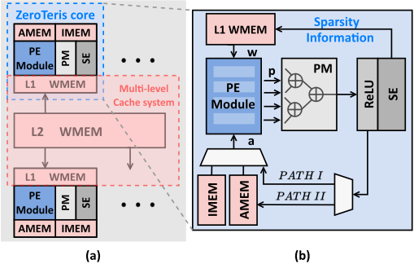
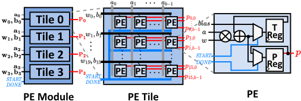
This section presents the hardware architecture of ZeroTetris. The entirety of ZeroTetris constitutes a multi-core accelerator that shares a common weight memory, as depicted in Figure 5(a). Each core utilizes the outer product-based method to expedite sparse MLP computation. A memory optimization strategy is proposed and implemented between the shared L2 weight memory (WMEM) and the individual L1 WMEM in each core, aimed at enhancing memory utilization and mitigating data request conflicts.
如图5(b)所示，单个ZeroTetris核心主要由稀疏编码器（SE）、处理单元（PE）模块、部分结果合并器（PM）以及三个存储器组成，即输入存储器（IMEM）、L1 WMEM和激活存储器（AMEM）。在每个乘法轮中，L1 WMEM根据稀疏信息选择相关的权重数据，并将其传输至PE模块。激活数据要么来自IMEM，要么来自上一层的结果。当PE模块完成一个乘法轮后，部分结果被转发至PM，并在其中合并以得到最终结果。SE对ReLU激活结果中的稀疏信息进行编码。
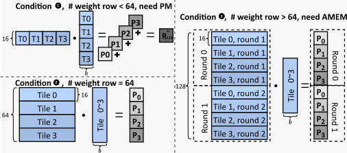
4.1.1 PE模块。如图6所示，一个PE模块由四个PE Tile组成，每个Tile容纳16 × 𝑏个PE，其中𝑏表示多层感知机（MLP）的批大小。在乘法轮开始时，会发起一个START信号，偏置被直接写入临时结果寄存器（T-Reg）。在乘法轮的每个周期中，该模块接收𝑏个激活数据以及供四个Tile使用的64个权重数据，每个Tile分配16个。每个PE计算输入的乘积，并将结果累加到T-Reg中。完成一个乘法轮后，DONE信号被激活，结果被存入部分结果寄存器（P-Reg）。
4.1.2 PM与AMEM。对于不同的神经体渲染（NVR）算法，隐藏层的激活特征可能具有不同的维度。例如，在NeRF中，隐藏层输出激活的维度为256；而在Instant-NGP中，第1、3、4层的输出维度为64，第2层为16。为了适配NVR中这些多样的输出维度，ZeroTetris引入了PM和AMEM，从而能够适配16、32、64、128、192和256等输出维度。这覆盖了大多数现有NVR算法的需求。
当输出激活维度小于64时，PE模块计算出的部分结果需要进行累加以获得最终结果。PM在一轮乘法结束后从PE模块中的P-Reg读取部分结果，并利用两级加法树进行累加。第一级加法树将来自Tile 0和Tile 1的部分结果矩阵P 0与P 1合并，得到P ′ 01；类似地，将来自Tile 2和Tile 3的P 2与P 3合并，得到P ′ 23。矩阵P ′ 01与P ′ 23共同构成输出维度为32的最终结果。第二级加法树将来自全部四个Tile的部分结果矩阵合并，得到P ′′ 0123，即输出维度为16的最终结果。当输出激活维度超过64时，PE模块计算得到的最终结果部分需要缓存到AMEM中。AMEM在一轮乘法结束后存储来自PE模块中P-Reg的数据，并支持双缓冲以确保计算的持续进行。
图7展示了三种场景，用以说明PM和AMEM在不同条件下的功能。在条件❶中，权重的行数（决定了激活输出的维度）小于64（在图7的示例中为16），权重和激活被垂直和水平地划分为四个部分，以便在四个Tile上进行并行计算。这产生了四个部分结果：P 0、P 1、P 2 和 P 3。PM将这些部分结果相加，得到最终结果 P ′′ 0123。由于所得到的结果
直接需要作为下一层计算的输入，因此它经由PATH I流动，如图5(b)所示。
在条件❷中，权重的行数为64，四个PE Tile所得到的结果恰好就是最终结果，因此无需进行PM处理。出于与第一种条件相同的原因，数据同样经由PATH I流动。在条件❸中，权重的行数大于64（在图7的示例中为128），四个PE Tile在每一乘法轮次中得到的结果是最终结果的一部分。总共需要两个轮次才能获得完整结果。在这种情况下，所得到的部分结果需要走Path II，如图5(b)所示，进入AMEM进行缓存。在两轮计算完成后，再从AMEM中取出，用作下一层计算的输入。
在实际系统中，多个核心在单个周期内同时向同一存储块发出数据请求，可能引发数据访问冲突，进而导致性能下降。为缓解冲突，我们引入了一个缓存系统，其中包含每个核心私有的L1缓存（负责保存并预取必要数据），以及存储全部权重数据的共享L2缓存。Algorithm 1展示了所提出的预取与请求调度算法。
4.2.1 预取算法。如§4.1.2所述，权重中的每一列在每个批次中最多只能被使用一次。因此，一旦这些列被使用，L1缓存便可立即将其逐出，从而触发预取（Line 2）。此外，L1缓存可以获取每一层的 𝑛𝑧 𝑟𝑜𝑤（§3.2），从而能够在预取过程中基于 𝑛𝑧 𝑟𝑜𝑤 跳过不必要的数据（Line 3）。在预取触发时缺少对应 𝑛𝑧 𝑟𝑜𝑤 的地址会被L1缓存标记为所需。一旦接收到 𝑛𝑧 𝑟𝑜𝑤，L1缓存与L2缓存便可分别剔除多余的数据和预取请求（Line 6-9）。
4.2.2 存储器请求调度算法。借助 𝑛𝑧 𝑟𝑜𝑤，L1缓存能够在预取请求中整合数据将于何时被使用的信息。这一能力使L2缓存能够对存储器请求进行重新调度，优先处理最紧迫的请求。所需时间可通过统计当前所需地址与预取地址之间的各 𝑛𝑧 𝑟𝑜𝑤 中1出现的次数来计算（Line 4-5）。在尚未接收到 𝑛𝑧 𝑟𝑜𝑤 的情况下，L1缓存将其视为全零。
我们基于28nm CMOS工艺实现了批大小为16的单核ZeroTetris，并通过实现周期精确的SystemC模拟器，将其进一步扩展为具有多级缓存的多核GPU Ground Truth Energy Breakdown Area Breakdown ZeroTetris系统。我们采用两种知名的神经体积渲染（NVR）算法：1) 原始的NeRF和2) 著名的后续工作Instant-NGP，并结合NeRF synthetic数据集[13]来评估所提出的ZeroTetris。为实现NeRF，我们在每个核心内配置了6 KB的IMEM、16 KB的双端口L1 WMEM以及16 KB的AMEM。多个核心共享一个960 KB的公共双端口L2 WMEM。对于Instant-NGP，由于权重数据规模的减小，每个核心均配备了各自专有的12.375 KB L1 WMEM，从而无需共享L2 WMEM或进行权重存储器优化。此外，鉴于所有输出维度均低于64，因此无需进行AMEM缓存。
ZeroTetris：基于空间特征相似性的神经体积渲染稀疏MLP引擎
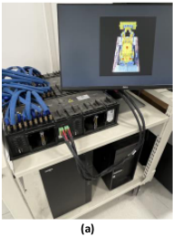
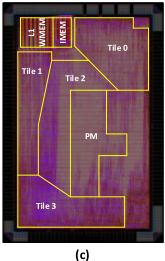
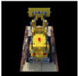
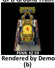
| Technology | 28nm | 28nm |
|---|---|---|
| Die Area | 2.18 mm × 1.46mm (3.18mm 2 ) | 2.18 mm × 1.46mm (3.18mm 2 ) |
| Power | 123.7mW | 123.7mW |
| Voltage | 0.9V | 0.9V |
| Frequency | 200MHz | 200MHz |
| SRAM | L1 WMEM | IMEM |
| SRAM | 12.375 KB | 3 KB |
| Technology | 28nm | 28nm |
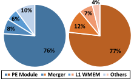
5.2.2 Performance Analysis of a Single ZeroTetris Core . As ZeroTetris identifies and skips zeros only when all activations in a given row are zeros, our approach faces limitations in fully exploiting the inherent sparsity within activations. The efficiency of ZeroTetris in handling zero values is contingent upon the batch size. A decrease in batch size enhances ZeroTetris's ability to discern zero values with finer resolution, leading to a higher likelihood of entire rows being skipped, thereby increasing sparsity utilization.
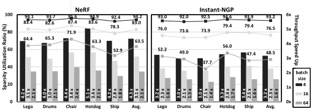
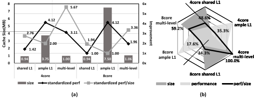
However, the trade-off exists as reducing the batch size lowers the weight reuse rate. Figure 10 visually depicts the utilization rates for zero values in each layer of NeRF and Instant-NGP under different batch sizes, accompanied by speedup factors in comparison to a dense accelerator. As NeRF and Instant-NGP activations demonstrating 83.0% sparsity and 76.5% zero utilization, ZeroTetris achieves a speedup of 3.1 × and 2.3 × respectively, when compared to a dense accelerator executing equivalent network computations.
Table 1 presents a comprehensive comparison of ZeroTetris with other existing dedicated accelerators for sparse matrix multiplication and MLP in NVR. In comparison to NeuRex[10], an MLP accelerator designed for NVR, the proposed ZeroTetris exhibits superior area and power efficiency. This is attributed to its ability to effectively bypass the distinctive sparse patterns in the activations. While sparse matrix multiplication accelerators, such as OuterSPACE [15] and SIGMA [17], achieve an impressive sparsity utilization ratio of nearly 100%, their substantial area and power overhead compromises the overall efficiency in terms of area and power. Despite ZeroTetris demonstrating lower zero utilization than other designs, its efficiency lies in leveraging spacial similarity-based sparsity within activations through NVR. By employing a simpler circuit for zero utilization, ZeroTetris incurs smaller overhead in zero-skipping operations. This strategic approach translates into advantages for ZeroTetris in terms of area utilization and energy consumption when compared to alternative designs.
5.2.3 Evaluation of the Multi-Core ZeroTetris System. In crafting a cache system, the pivotal parameters of consideration are area and performance. Consequently, two prevalent types of cache systems emerge in hardware accelerator designs. One adopts a shared single-port L1 cache to minimize area, while the alternative approach allocates ample L1 cache for each core to optimize performance. In contrast, our proposed multi-level cache system excels in maximizing performance per MB.
| EIE[8] | OuterSPACE[15] | SIGMA[17] | NeuRex-Server[10] | NeuRex-Edge[10] | ZeroTetris | |
|---|---|---|---|---|---|---|
| Applications | DNN | Tensor Algebra | Tensor Algebra | NVR | NVR | NVR |
| Quantization | Fixed 4bit | Float ∼ 100 | Float ∼ 100 | - N.A. | - | Fixed 11-16bit 83 |
| Sparsity Utilization Ratio [%] | ∼ 100 | N.A. | 28 | |||
| Process [nm] | 28 | 32 | 28 | 28 | 28 | |
| Area [mm 2 ] | 63.8 | 86.74 | 65.1 | 14.50 | 1.66 | 3.18 |
| Frequency [MHz] | 1200 | 1500 | 500 | 1000 3.87 | 1000 | 200 |
| Power [W] | 2.36 | 23.99 | 22.33 | 0.73 | 0.124 | |
| Power Efficiency [TOPS/W] | 1.43 | 0.18 | 4.03 | 8.47 | 2.81 | 10.31 |
| | EIE[8] | OuterSPACE[15] | SIGMA[17] | NeuRex-Server[10] | NeuRex-Edge[10] | ZeroTetris |
We implement and test a Multi-core ZeroTetris System incorporating the proposed multi-level cache system using a SystemCbased simulator. Figure 11(a) visually presents the area, standardized performance and standardized performance per MB for various cache system configurations with one batch test. As we can see in Figure 11(b), the multi-level cache system outperforms the other two configurations in both 4-core and 8-core scenarios. Specifically, the multi-level cache system exhibits the best performance in the 4-core configuration, outperforming the other configurations by 17.6% to 59.2% in other scenarios.
本文提出了 ZeroTetris，一种专门为加速稀疏多层感知机（MLP）运算而定制的硬件设计，它利用了神经体渲染（NVR）算法中固有的基于特征相似性的稀疏性。此外，还提出了一种与多核 ZeroTetris 配套的多级缓存。我们构建了基于 FPGA 的原型系统来验证所提出的 ZeroTetris。我们还在 28nm CMOS 工艺下实现了该设计以评估其性能。在 200 MHz 的工作频率下，我们的单核 ZeroTetris 占用 3.18 mm² 的硅面积，功耗为 123.7 mW。与 NVR 中面向稀疏矩阵乘法和 MLP 计算的最先进加速器相比，我们的设计在面积效率和功耗效率方面均展现出更优越的性能。
1 条证据未在原文中核对到